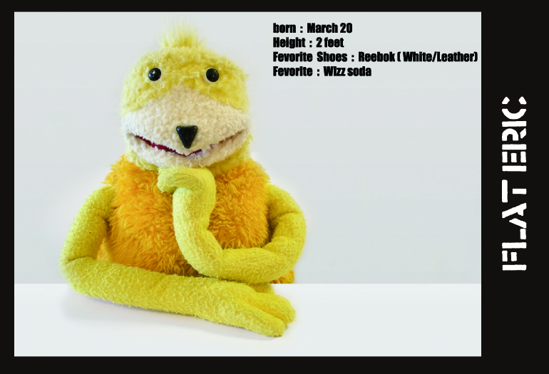

Flat Eric is a yellow puppet character from Levi's commercials for Sta-Prest One Crease Denim Clothing, built by Jim Henson's Creature Shop. His name comes from an idea for a commercial that included having a car run over his head and flattening it. The idea was not used, but the name stuck. In the commercials, Flat Eric would ride with his friend Angel (played by Philippe Petit) around California, evading the police as a wanted criminal.
He was featured in the music video for "Flat Beat" by French artist Mr. Oizo (aka Quentin Dupieux) and he also appeared as a prop in Series 1 of the 2001 to 2003 BBC comedy The Office. In August 2004, he co starred with David Soul, in a five million pound television advert for Auto Trader. He has also appeared on The Big Breakfast. The puppet also featured heavily as a prop for more than ten years on SIC Radical interactive chat show Curto Circuito, being usually named as "Boneco Amarelo" (Portuguese for "Yellow Puppet").
He was based on a puppet called Stéphane that was similar, but with ears and the hands were fixed. Stéphane appeared in some short films by Mr. Oizo (including a video for the track M-Seq), and had a small cult following in the United Kingdom and France. In 1999, Levi's decided to build a television commercial campaign around the puppet, to be directed by Oizo. The character was renamed Eric, a more "international name", in contrast to the original French name Stéphane.[citation needed]
フラット・エリックは、Levisのスタ・プレストというデニムのコマーシャルのために、ジム・ヘンソン・クリーチャー・ショップ(sesami streetやカエルのカーミットでおなじみ！)が創作した黄色いパペットのキャラクターである。コマーシャルの中で、エリックが車に轢かれてペチャンコ(flat)になってしまうというアイデアから名付けられているが、結局そのアイデアは採用されず名前だけが残った。実際のコマーシャルでは友達の天使と共に、カリフォルニアを車で逃亡する指名手配犯として描かれている。99年、Levis社が彼を中心としたTVコマーシャルのキャンペーンを展開する事を決め、フランス・エレクトロニカDJの重鎮であり、フランス国内屈指の映像ディレクターとして活躍していたMr.OIZOに監修を依頼。その後、Mr.OIZOのアイコンとしてミュージック・ビデオにフューチャーされる。日本国内ではLevisのCMは放送されなかったが、OIZOのMVが MTVなどでパワープレイされていたため、当時、国内の洋楽ファン(しかも当時エレクトロニカファンはかなりのミュージックオピニオンだった)が、原宿キディランドにエリックを買い求める現象がおきていた。異様だった。